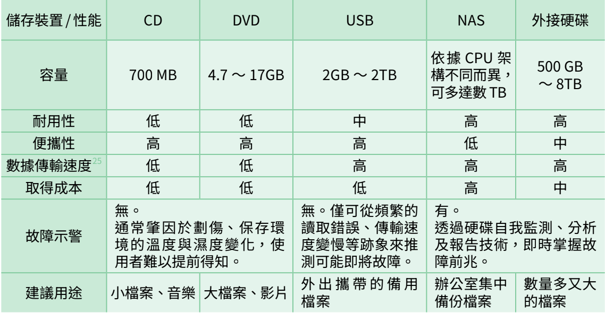
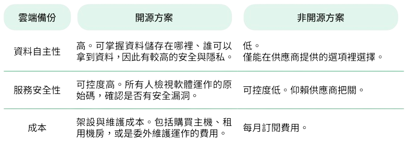
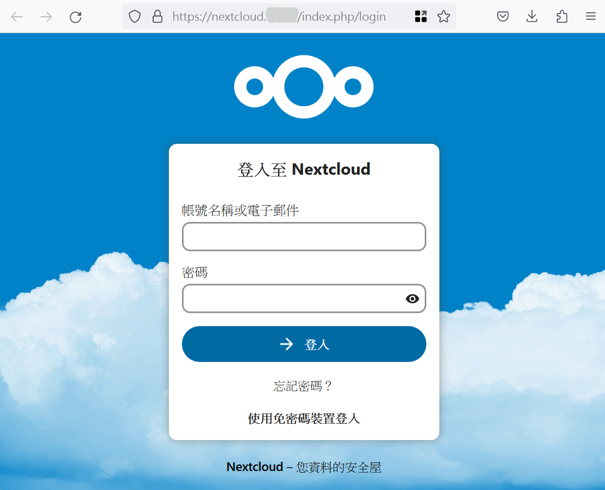
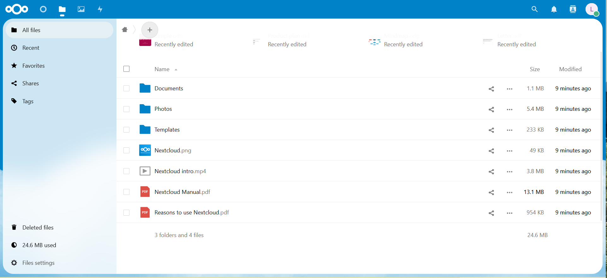
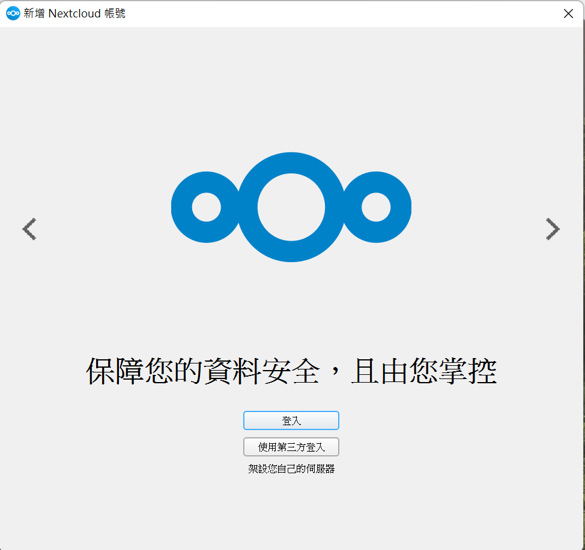

案例
看著網站重新開站，小明不由得鬆了一口氣。正想著要把報告重新放上去，猛然想起「天啊！我們的資料都不在了⋯⋯」，小明想著以後的資料該怎麼辦時，一陣風吹起捲軸，翻開了第四章。
你知道在個案故事裡，小明是因哪些行為而導致檔案喪失又毫無備份可用的窘境嗎？想好後，再往下對答案喔！
- 小明在自己的筆電存放所有報告的素材（訪談、研究材料）和第一版報告檔案，這些資料沒有在他的筆電以外的地方備份。如果筆電遺失或中毒，組織 A 數月以來投注的心血便化為烏有。
- 小明將第一版報告上傳到 Woodless 以便跟同事線上協作，不過修訂過程中的每個版本，以及發布前的最後一版檔案，都只存在 Woodless 系統上。當線上檔案遺失，這段時間的編修進度也就跟著消失。
「在自己的筆電做事，需要團隊討論時上傳到雲端」這是許多人熟悉的工作方式， Google 文件可以輕鬆做到版本管理，回溯到某個大家編修改動的時間點；有些人會細心地為不同版本另開檔案，仔細分類與保管。然而，在鍵入最後一個句號後，大家通常只記得慶祝報告完工、專案執行完畢，不會記得將這些檔案備份。
換言之，你我都可能遭遇小明與組織 A 的慘劇。
概論
資料意外消失的機率比你想像得高
組織 A 遭遇的狀況並非特例，根據資料保護供應商 Veeam 發布的《2023 年資料保護趨勢報告》，在受訪的 4200 個組織中，有 85％ 的組織在 2022 年遭受至少一次勒索軟體的攻擊，其中的 39％ 組織生產數據在攻擊中被加密或銷毀，受害者平均僅能搶救回受影響數據中的 55%。
就算組織沒被任何駭客盯上，我們也可能因為各種人為、機器故障或天災意外等原因遺失資料。以人為因素來說，工作忙碌時免不了出錯，例如誤刪文件、不小心格式化檔案、重灌電腦前沒備份資料，甚至在意外發生後覆寫檔案，救回檔案的機率更渺茫；有時我們會遇到 USB、光碟或 NAS 之類的儲存裝置故障；也可能因為遭遇地震、淹水等天災導致儲存裝置損壞，或是像在組織 A 的情境裡，若辦公室與救援地點都曝光，對手竊取資料的風險也大幅提升。
為什麼要備份？為了不要經歷失去的遺憾啊！
2021 發生高中生學習歷程檔案資料遺失事件，就是一個警世案例。由於政府委外處理的廠商在將資料搬遷至新機房的過程中，套用錯誤的設定樣板，又恰巧因時程匆促而未完備資料備份機制，導致這段時間所上傳的檔案全部消失，沒有挽救餘地。這件事一共影響 81 所學校，抹去 7854 名學生嘔心瀝血之作。對廠商來說，失去合作單位的信任、額外付出於搶救資料的金錢與時間成本，代價慘重。
對公民團體來說，專案文件、服務對象個資、捐款人資料等各種檔案，都攸關組織守護的價值，更是組織維持運作的基礎。建立完善的資料備份機制，能確保面對任何緊急狀況，組織的核心資產和運作能力不會受到致命打擊，這對組織持續推動倡議、救援個案的工作，至關重要。
如何建立完善的資料備份機制？熟記 321 口訣
只要把資料多存在幾個地方就好了嗎？還是要在電腦和 NAS 上放幾包綠色乖乖，祈禱資料不遺失？雞蛋不可放在同一個籃子裡，但要把雞蛋分散放在什麼地方最安全？資訊界的「備份 321 」機制便是這些問題的解答。
- 將資料分別儲存至少在 3 個地方。
- 至少其中 2 個檔案須儲存在不同媒介中，例如在電腦裡存一份，用 USB、外接硬碟等可外接儲存裝置再存一份，或是在雲端上儲存檔案。至少讓一份檔案處於離線狀態，如此可防止病毒攻擊、安全漏洞等風險導致資料遺失；使用雲端備份時，記得考慮該雲端儲存服務是否足夠安全、有無從雲端外洩資料的風險。
- 至少 1 份檔案完成異地備援的儲存方式，亦即把這份檔案保存在和上述 2 個檔案不同的地方，例如可將儲存這份檔案的外接硬碟放在銀行保險箱、辦公室以外的空間。此舉可避免將全部的離線檔案都放在同一個地點，若一個儲存地點遭遇偷竊、天災等意外，仍有儲存在其他地點的資料可備援。
「備份 321 」做起來其實不難，舉例來說，每當完成一個版本的文件，你可以在辦公室電腦、USB 和雲端空間各儲存一份， 並將 USB 保持在離線狀態，存放在另一處（但如何限制組織的資料外洩到其他地方，是另一個須考量的問題），這樣即符合備份 321 的原則。 如果辦公室遭遇意外、線上備份因人為疏失而遺失檔案，你還有離線且儲存在別處的 USB 裡的檔案可恢復使用。
要注意的是，如果是儲存在同一台電腦的不同硬碟、資料夾，並不符合「將檔案儲存在不同媒介」的原則喔！想想看，如果這台電腦被病毒感染或意外損壞，資料也會跟著消失，在這個情況下，雞蛋仍然放在同一個籃子裡，風險並未分散。
備份時，別忘了要確認檔案可否打開，確保在有需要時能正確還原檔案，若可做到版本管理會更好。以小明的案例來說，如果在每次修正報告內容時都儲存並備份一個版本的檔案，便能找回特定時間點的報告版本，以備不時之需。
可用工具
常見的外接儲存裝置
備份 321 實行不難，最難的是保持這個好習慣。以下介紹常見的外接儲存裝置的差異，作為讀者選擇最符合需求備份裝置的參考。
如表格，每種裝置的性能不同，組織應視自己須儲存的資料性質、便利性、可負擔成本等不同面向來評估，選擇最適合自己的備份裝置。
常見的外接儲存裝置
若組織將雲端列為備份的選項，你可以就組織資源與安全性尋找適合的雲端空間。常見的雲端儲存服務有 Google Drive、Mircrosoft One Drive 和 Dropbox，它們皆提供一些免費儲存容量，組織選擇時可評估預算、團隊的工作習慣等，選擇最適合自己的服務商。這些廠商都有提供詳盡的使用教學，本手冊不再花篇幅介紹。
如果你跟組織 A 一樣，判斷某資料屬於應極力保護的資產，那麼你選擇雲端備份廠商時就該將「資料自主性」納入考量。上傳資料到雲端，意謂將自己的資料透過網路上傳，存放到別人的電腦，當你需要存取資料時，再透過網路連線取用——而這代表資料貯存地（也就是機房）的所在國家，可能有權力命令執法單位扣押主機、取走檔案，就如同個案故事裡，政府 C 命令 Nono 集團交出組織 A 的數位足跡紀錄。
因此，對於重視資料的公民團體來說，最好充分了解自己存放在雲端的資料究竟是被誰管理、誰有權限取得。
不過，就如同〈風險評估〉章節裡強調的，選擇自己可負擔的安全措施才是最重要的。如下表，開源方案的優點是對資料的掌握度高，有利把關資料流向，堅守隱私。相對的，自行架設的技術門檻是一道挑戰，若你沒有技術能力，也無法委託專業團隊協助架設和維護開源的雲端備份方案的話，非開源方案依舊是可考慮的選擇，以免因缺乏維護而導致資安漏洞。
開源方案有許多資料備份的服務，本手冊僅介紹 Nextcloud，因為這套服務的介面與 Google Drive 高度相似，易用性較高，轉換工具的成本較低。我們先來看 Nextcloud 的使用方法，如果你覺得還算好操作，再往下看架設方式，以評估是否要使用開源方案做雲端備份。
Nextcloud 有三種使用方式：
- 使用網頁備份、處理資料：打開瀏覽器，在網址列輸入已架設好的 Nextcloud 網址。進入登入畫面，接著輸入自己的帳號與密碼。
- 開啟電腦的檔案同步功能：到 Nextcloud 的官方網站下載並安裝程式（https://nextcloud.com/install/）。接著如第一種方式，先輸入已架設好的 Nextcloud 網址，再登入帳號，即可與電腦裡的檔案自動同步。
- 使用手機或平板的應用程式：若你使用 iPhone，請到 App Store 搜尋 Nextcloud（https://apps.apple.com/us/app/nextcloud/id1125420102）；若你使用 Android，請到 Google Play 上搜尋 Nextcloud（https://play.google.com/store/apps/details?id=com.nextcloud.client ）。安裝 Nextcloud 的應用程式之後，就可以如第一種方式登入雲端硬碟介面。



如果你覺得 Nextcloud 的介面看起來與 Google Drive 相差無幾，上手不成問題的話，不妨參考以下架設方法，考慮組織是否有能力使用 Nextcloud 作為雲端備份方案。
-
建立儲存空間：有兩種作法。
- 自行購買電腦主機當作伺服器，優點是較安全，能完全掌握自己儲存檔案的位置，缺點是需要負擔購買及維修電腦、存放電腦主機的機房租金等費用。
- 將租賃電腦與機房的需求委外給服務商，優點是方便，缺點是對資料的自主性降低，因此建議須再三確認服務商以客戶的安全與隱私為首要目標。
- 決定雲端硬碟的網址：如同 Google Drive 有自己的網址（https://drive.google.com/），你架設的 Nextcloud 也需要網址。你需要租賃一個網域，例如建立這種網址── https：//nextcloud.你的組織.tw/ ；若你的組織已經有自己的網域，可直接沿用。
如果架設過程超過組織的技術能力，或是你希望有專業團隊協助你維護雲端空間的安全，避免外界攻擊，可洽詢網路主機供應商 Greenhost、GreenNet ，或聯繫開放文文化基金會（hi@ocf.tw）詢問相關建議。
小撇步
資料備份是重要卻又時常被忽略的基礎工作，就像是我們會注意運動的姿勢和技巧，卻常忘了運動後應該要收操，幫助我們放鬆肌肉，避免發生運動傷害，如此才能更安全、持久地運動。同樣地，我們需要將資料備份視為日常工作的必備環節，以建立組織應對危機時刻的韌性。
建議讀者參照〈風險評估〉章節，審視組織對不同資料的保護程度與可負擔的成本，訂立一套組織成員真的可以落實的備份機制。為了養成定期備份的習慣，或許可先從設定幾個檢核點做備份檢查開始（例如報告寫到一定程度、專案在結案歸檔之前），避免大家遺漏這個重要步驟。
如果對本文的介紹有任何疑義，可以聯繫 hi@ocf.tw 開放文化基金會詢問。